| ACM Turing Award | |
|---|---|
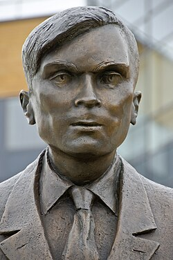 Statue of Alan Turing | |
| Awarded for | Outstanding contributions in computer science |
| Country | United States |
| Presented by | Association for Computing Machinery |
| Reward | US$1,000,000[1] |
| First award | 1966 |
| Website | amturing |
{kind=link}
The ACM A. M. Turing Award is an annual prize given by the Association for Computing Machinery (ACM) for contributions of lasting and major technical importance to computer science. It is generally recognized as the highest distinction in the field of computer science and is often referred to as the "Nobel Prize of Computing".[2][3][4][5][6] As of 2026, 81 people have been awarded the prize, with the most recent recipients being Charles H. Bennett and Gilles Brassard, who won in 2025.
The award is named after Alan Turing, also referred as "Father of Computer Science", who was a British mathematician and reader in mathematics at the University of Manchester. Turing is often credited as being the founder of theoretical computer science and artificial intelligence,[7] and a key contributor to the Allied cryptanalysis of the Enigma cipher during World War II.[8] From 2007 to 2013, the award was accompanied by a prize of US$250,000, with financial support provided by Intel and Google.[2][9] Since 2014, the award has been accompanied by a prize of US$1 million, with financial support provided by Google.[1][10]
The first recipient, in 1966, was Alan Perlis. The youngest recipient was Donald Knuth, who won in 1974 at the age of 36,[11] while the oldest recipient was Alfred Aho, who won in 2020 at the age of 79.[12] Three women have been awarded the prize: Frances Allen (in 2006),[13] Barbara Liskov (in 2008),[14] and Shafi Goldwasser (in 2012).[15]
{kind=link}
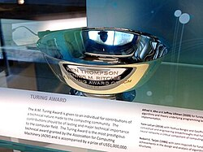
Recipients
| Year | Recipient(s) | Photo | Citation | Affiliation at time of award |
|---|---|---|---|---|
| 1966 | Alan Perlis | "for his influence in the area of advanced computer programming techniques and compiler construction"[16][17] | Carnegie Mellon University | |
| 1967 | Maurice Wilkes | 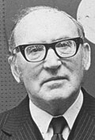 |
for contributions including being "the builder and designer of the EDSAC, the second computer with an internally stored program" and introducing program libraries (together with David Wheeler and Stanley Gill)[18][19] | University of Cambridge |
| 1968 | Richard Hamming | "for his work on numerical methods, automatic coding systems, and error-detecting and error-correcting codes"[20][21] | Bell Labs | |
| 1969 | Marvin Minsky | 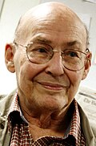 |
"for his central role in creating, shaping, promoting, and advancing the field of artificial intelligence"[22][23] | Massachusetts Institute of Technology |
| 1970 | James H. Wilkinson | "for his research in numerical analysis to facilitate the use of the high-speed digital computer, having received special recognition for his work in computations in linear algebra and 'backward' error analysis"[24][25] | National Physical Laboratory | |
| 1971 | John McCarthy | 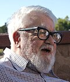 |
Award citation refers to McCarthy's lecture "The Present State of Research on Artificial Intelligence"[26][27] | Stanford University |
| 1972 | Edsger W. Dijkstra | 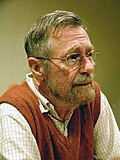 |
"for fundamental contributions to programming as a high, intellectual challenge; for eloquent insistence and practical demonstration that programs should be composed correctly, not just debugged into correctness; for illuminating perception of problems at the foundations of program design"[28][29] | Eindhoven University of Technology |
| 1973 | Charles Bachman | 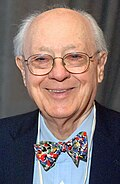 |
"for his outstanding contributions to database technology"[30][31] | General Electric Research Laboratory (now under Groupe Bull, an Atos company) |
| 1974 | Donald Knuth | 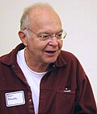 |
"for his major contributions to the analysis of algorithms and the design of programming languages, and in particular for his contributions to 'The Art of Computer Programming' through his well-known books in a continuous series by this title"[32][33] | Stanford University |
| 1975 | Allen Newell | in collaboration with J. C. Shaw and others, for "basic contributions to artificial intelligence, the psychology of human cognition, and list processing."[34][35][36] | RAND Corporation | |
| Herbert A. Simon | Carnegie Mellon University | |||
| 1976 | Michael O. Rabin | 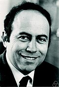 |
"for their joint paper 'Finite automata and their decision problem',[37] which introduced the idea of nondeterministic machines"[38][39][40][41] | Princeton University |
| Dana Scott | 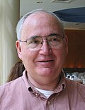 |
University of Chicago | ||
| 1977 | John Backus | 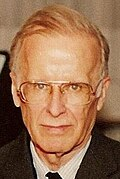 |
"for profound, influential, and lasting contributions to the design of practical high-level programming systems, notably through his work on FORTRAN, and for seminal publication of formal procedures for the specification of programming languages"[42][43] | IBM Research |
| 1978 | Robert W. Floyd | "for having a clear influence on methodologies for the creation of efficient and reliable software, and for helping to found the following important subfields of computer science: the theory of parsing, the semantics of programming languages, automatic program verification, automatic program synthesis, and analysis of algorithms"[44][45] | Stanford University | |
| 1979 | Kenneth E. Iverson | 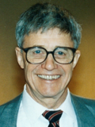 |
"for his pioneering effort in programming languages and mathematical notation resulting in what the computing field now knows as APL, for his contributions to the implementation of interactive systems, to educational uses of APL, and to programming language theory and practice"[46][47] | IBM Research |
| 1980 | Tony Hoare | 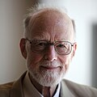 |
"for his fundamental contributions to the definition and design of programming languages"[48][49] | University of Oxford |
| 1981 | Edgar F. Codd | "for his fundamental and continuing contributions to the theory and practice of database management systems"[50][51] | IBM Research | |
| 1982 | Stephen Cook | 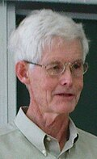 |
for "his advancement of our understanding of the complexity of computation in a significant and profound way"; the citation in particular mentions his paper "The Complexity of Theorem Proving Procedures," which is credited with founding the theory of NP-completeness[52][53] | University of Toronto |
| 1983 | Dennis Ritchie | 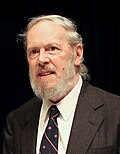 |
"for their development of generic operating systems theory and specifically for the implementation of the UNIX operating system"[54][55] | Bell Labs |
| Ken Thompson | 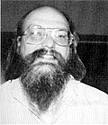 | |||
| 1984 | Niklaus Wirth | 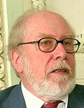 |
"for developing a sequence of innovative computer languages, EULER, ALGOL-W, MODULA and PASCAL"[56] | University of Zurich |
| 1985 | Richard M. Karp | 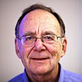 |
"for his continuing contributions to the theory of algorithms including the development of efficient algorithms for network flow and other combinatorial optimization problems, the identification of polynomial-time computability with the intuitive notion of algorithmic efficiency, and, most notably, contributions to the theory of NP-completeness"[57] | University of California, Berkeley |
| 1986 | John Hopcroft | 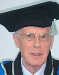 |
"for fundamental achievements in the design and analysis of algorithms and data structures"[58][59] | Cornell University |
| Robert Tarjan | 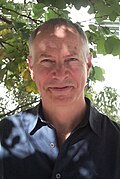 |
Bell Labs, Princeton University | ||
| 1987 | John Cocke | "for significant contributions in the design and theory of compilers, the architecture of large systems and the development of reduced instruction set computers (RISC); for discovering and systematizing many fundamental transformations now used in optimizing compilers including reduction of operator strength, elimination of common subexpressions, register allocation, constant propagation, and dead code elimination"[60] | IBM Research | |
| 1988 | Ivan Sutherland | 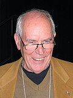 |
"for his pioneering and visionary contributions to computer graphics, starting with Sketchpad, and continuing after"[61] | Sun Microsystems |
| 1989 | William Kahan | .jpg)
|
"for his fundamental contributions to numerical analysis" and as "one of the foremost experts on floating-point computations"[62] | University of California, Berkeley |
| 1990 | Fernando J. Corbató | 
|
"for his pioneering work organizing the concepts and leading the development of the general-purpose, large-scale, time-sharing and resource-sharing computer systems, CTSS and Multics"[63] | Massachusetts Institute of Technology |
| 1991 | Robin Milner | The award citation mentions three primary contributions: his mechanization of the Logic of Computable Functions; the programming language ML including its type inference and type safety; the calculus of communicating systems; as well as the connection between operational and denotational semantics[64][65] | University of Edinburgh | |
| 1992 | Butler Lampson | 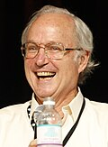 |
"for contributions to the development of distributed, personal computing environments and the technology for their implementation: workstations, networks, operating systems, programming systems, displays, security and document publishing"[66] | Digital Equipment Corporation |
| 1993 | Juris Hartmanis | 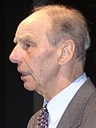 |
"in recognition of their seminal paper[67] which established the foundations for the field of computational complexity theory"[68][69][70] | General Electric Research Laboratory (now under Groupe Bull, an Atos company) |
| Richard E. Stearns | 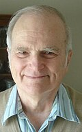 | |||
| 1994 | Edward Feigenbaum | 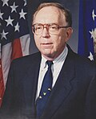 |
"for pioneering the design and construction of large scale artificial intelligence systems, demonstrating the practical importance and potential commercial impact of artificial intelligence technology"[71][72][73] | Stanford University |
| Raj Reddy | Carnegie Mellon University | |||
| 1995 | Manuel Blum | 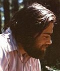 |
"in recognition of his contributions to the foundations of computational complexity theory and its application to cryptography and program checking"[74] | University of California, Berkeley |
| 1996 | Amir Pnueli | 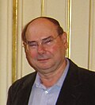 |
"for seminal work introducing temporal logic into computing science and for outstanding contributions to program and system verification"[75] | Weizmann Institute of Science |
| 1997 | Douglas Engelbart | 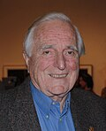 |
"for an inspiring vision of the future of interactive computing and the invention of key technologies to help realize this vision"[76] | Bootstrap Institute/Alliance,[77] |
| 1998 | Jim Gray | 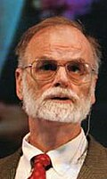 |
"for seminal contributions to database and transaction processing research and technical leadership in system implementation"[78] | Microsoft Research |
| 1999 | Fred Brooks | 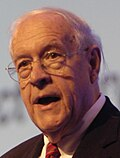 |
"for landmark contributions to computer architecture, operating systems, and software engineering"[79] | IBM Research, University of North Carolina at Chapel Hill |
| 2000 | Andrew Yao | "in recognition of his fundamental contributions to the theory of computation, including the complexity-based theory of pseudorandom number generation, cryptography, and communication complexity"[80] | Princeton University | |
| 2001 | Ole-Johan Dahl | "for ideas fundamental to the emergence of object-oriented programming, through their design of the programming languages Simula I and Simula 67"[81][82] | Norwegian Computing Center, University of Oslo | |
| Kristen Nygaard | 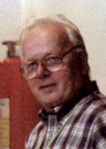 | |||
| 2002 | Leonard Adleman | 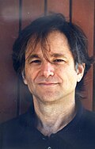 |
"for their ingenious contribution for making public-key cryptography useful in practice"[83][84][85] | University of Southern California |
| Ron Rivest | 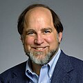 |
Massachusetts Institute of Technology | ||
| Adi Shamir | 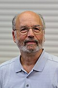 | |||
| 2003 | Alan Kay | 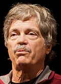 |
"for pioneering many of the ideas at the root of contemporary object-oriented programming languages, leading the team that developed Smalltalk, and for fundamental contributions to personal computing"[86] | HP Labs |
| 2004 | Vint Cerf | 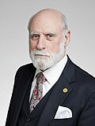 |
"for pioneering work on internetworking, including the design and implementation of the Internet's basic communications protocols, TCP/IP, and for inspired leadership in networking"[87][88] | MCI, CNRI |
| Robert Kahn | 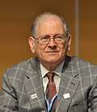 |
CNRI | ||
| 2005 | Peter Naur | 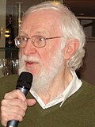 |
"for fundamental contributions to programming language design and the definition of ALGOL 60, to compiler design, and to the art and practice of computer programming"[89] | University of Copenhagen |
| 2006 | Frances Allen | 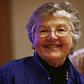 |
"for pioneering contributions to the theory and practice of optimizing compiler techniques that laid the foundation for modern optimizing compilers and automatic parallel execution"[90] | IBM Research |
| 2007 | Edmund M. Clarke | 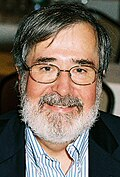 |
"for their role in developing model checking into a highly effective verification technology that is widely adopted in the hardware and software industries"[91][92][93][94] | Carnegie Mellon University |
| E. Allen Emerson | 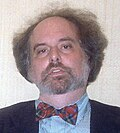 |
University of Texas at Austin | ||
| Joseph Sifakis | 
|
French National Centre for Scientific Research | ||
| 2008 | Barbara Liskov | 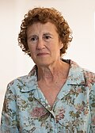 |
"for contributions to practical and theoretical foundations of programming language and system design, especially related to data abstraction, fault tolerance, and distributed computing"[14] | Massachusetts Institute of Technology |
| 2009 | Charles P. Thacker | 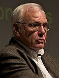 |
"for the pioneering design and realization of the first modern personal computer—the Alto at Xerox PARC—and seminal inventions and contributions to local area networks (including the Ethernet), multiprocessor workstations, snooping cache coherence protocols, and tablet personal computers"[95] | Microsoft Research |
| 2010 | Leslie Valiant | 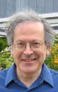 |
"for transformative contributions to the theory of computation, including the theory of probably approximately correct (PAC) learning, the complexity of enumeration and of algebraic computation, and the theory of parallel and distributed computing"[96] | Harvard University |
| 2011 | Judea Pearl | 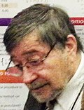 |
"for fundamental contributions to artificial intelligence through the development of a calculus for probabilistic and causal reasoning"[97][98] | University of California, Los Angeles |
| 2012 | Shafi Goldwasser | 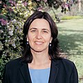 |
"for transformative work that laid the complexity-theoretic foundations for the science of cryptography, and in the process pioneered new methods for efficient verification of mathematical proofs in complexity theory"[15][99][100] | Massachusetts Institute of Technology, Weizmann Institute of Science |
| Silvio Micali | Massachusetts Institute of Technology | |||
| 2013 | Leslie Lamport | 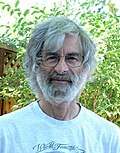 |
"for fundamental contributions to the theory and practice of distributed and concurrent systems, notably the invention of concepts such as causality and logical clocks, safety and liveness, replicated state machines, and sequential consistency"[101][102][103] | Microsoft Research |
| 2014 | Michael Stonebraker | 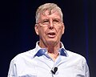 |
"for fundamental contributions to the concepts and practices underlying modern database systems"[104][105] | Massachusetts Institute of Technology |
| 2015 | Whitfield Diffie | 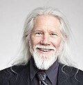 |
"for inventing and promulgating both asymmetric public-key cryptography, including its application to digital signatures, and a practical cryptographic key-exchange method[106][107][108] | Stanford University |
| Martin Hellman | ||||
| 2016 | Tim Berners-Lee | "for inventing the World Wide Web, the first web browser, and the fundamental protocols and algorithms allowing the Web to scale"[109] | Massachusetts Institute of Technology, World Wide Web Consortium | |
| 2017 | John L. Hennessy | "for pioneering a systematic, quantitative approach to the design and evaluation of computer architectures with enduring impact on the microprocessor industry"[110][111][112] | Stanford University | |
| David Patterson | University of California, Berkeley | |||
| 2018 | Yoshua Bengio | "for conceptual and engineering breakthroughs that have made deep neural networks a critical component of computing"[113][114][115][116] | Université de Montréal, Mila | |
| Geoffrey Hinton | University of Toronto, Google Brain | |||
| Yann LeCun | New York University, Meta AI | |||
| 2019 | Edwin Catmull | "For fundamental contributions to 3D computer graphics, and the impact of computer-generated imagery (CGI) in filmmaking and other applications"[117][118][119] | Pixar | |
| Pat Hanrahan | 
|
Stanford University | ||
| 2020 | Alfred Aho | "for fundamental algorithms and theory underlying programming language implementation and for synthesizing these results and those of others in their highly influential books, which educated generations of computer scientists"[120][121][122] | Columbia University | |
| Jeffrey Ullman | Stanford University | |||
| 2021 | Jack Dongarra | 
|
"for pioneering contributions to numerical algorithms and libraries that enabled high performance computational software to keep pace with exponential hardware improvements for over four decades"[123][124] | Oak Ridge National Laboratory, University of Manchester, University of Tennessee, Rice University |
| 2022 | Robert Metcalfe | .jpg)
|
"for the invention, standardization, and commercialization of Ethernet"[125] | Massachusetts Institute of Technology |
| 2023 | Avi Wigderson | "For foundational contributions to the theory of computation, including reshaping our understanding of the role of randomness in computation and mathematics, and for his decades of intellectual leadership in theoretical computer science"[126][127] | Institute for Advanced Study | |
| 2024 | Andrew Barto | "For developing the conceptual and algorithmic foundations of reinforcement learning"[3][128][129] | University of Massachusetts Amherst | |
| Richard S. Sutton | University of Alberta, Amii | |||
| 2025 | Charles H. Bennett | "For their essential role in igniting and shaping the quantum revolution in computer science and in information and communications technology."[130] | IBM Research | |
| Gilles Brassard | Université de Montréal |
{kind=link}
.jpg){kind=link}
{kind=link}
{kind=link}
{kind=link}
{kind=link}
{kind=link}
.jpg){kind=link}
{kind=link}
{kind=link}
{kind=link}
_-_Ken_Iverson.png){kind=link}
{kind=link}
.jpg){kind=link}
{kind=link}
{kind=link}
.jpg){kind=link}
{kind=link}
.jpg){kind=link}
{kind=link}
{kind=link}
.jpg){kind=link}
.jpg){kind=link}
.jpg){kind=link}
{kind=link}
{kind=link}
.jpg){kind=link}
{kind=link}
{kind=link}
.jpg){kind=link}
.jpg){kind=link}
.jpg){kind=link}
{kind=link}
{kind=link}
{kind=link}
.jpg){kind=link}
_(cropped).jpg){kind=link}
.jpg){kind=link}
{kind=link}
{kind=link}
{kind=link}
.jpg){kind=link}
.jpg){kind=link}
{kind=link}
.jpg){kind=link}
.jpg){kind=link}
_(cropped).jpg){kind=link}
{kind=link}
.jpg){kind=link}
{kind=link}
{kind=link}
.jpg){kind=link}
{kind=link}
.jpg){kind=link}
.jpg){kind=link}
.jpg){kind=link}
{kind=link}
_(cropped).jpg){kind=link}
.jpg){kind=link}
{kind=link}
_Cropped.jpg){kind=link}
{kind=link}
.jpg){kind=link}
_(cropped).jpg){kind=link}
See also
References
- ^ a b CACM Staff (2014). "ACM's Turing Award prize raised to $1 million". Communications of the ACM. 57 (12): 20. doi:10.1145/2685372.
- ^ a b "A. M. Turing Award". Association for Computing Machinery. Archived from the original on December 12, 2009. Retrieved November 5, 2007.
- ^ a b "ACM A.M. Turing Award Honors Two Researchers Who Led the Development of Cornerstone AI Technology" (Press release). The Association for Computing Machinery. March 5, 2025. Archived from the original on March 5, 2025.
- ^ Dasgupta, Sanjoy; Papadimitriou, Christos; Vazirani, Umesh (2008). Algorithms. McGraw-Hill. p. 317. ISBN 978-0-07-352340-8.
- ^ "dblp: ACM Turing Award Lectures". informatik.uni-trier.de. Archived from the original on January 2, 2015. Retrieved February 11, 2023.
- ^ Brown, Bob (June 6, 2011). "Why there's no Nobel Prize in Computing". Network World. Archived from the original on December 4, 2023. Retrieved June 3, 2015.
- ^ Homer, Steven and Alan L. (2001). Computability and Complexity Theory. Springer. p. 35. ISBN 978-0-387-95055-6. Archived from the original on April 3, 2023. Retrieved November 5, 2007.
- ^ Copeland, Jack (June 18, 2012). "Alan Turing: The codebreaker who saved 'millions of lives'". BBC News Technology. Archived from the original on October 11, 2014. Retrieved October 26, 2014.
- ^ Geringer, Steven (July 27, 2007). "ACM'S Turing Award Prize Raised To $250,000". ACM press release. Archived from the original on December 30, 2008. Retrieved October 16, 2008.
- ^ "ACM's Turing Award Prize Raised to $1 Million". Association for Computing Machinery. Archived from the original on November 23, 2015. Retrieved November 13, 2014.
- ^ Zhongkai Shangguan; Zihe Zheng; Jiebo Luo (2021). "What Kind of Person Wins the Turing Award?". p. 1. arXiv:2104.05636 [cs.GL].
The youngest winner was Donald Knuth, who convinced the jury with "Computer Programming as an Art" and won [the] Turing Award in 1974 at the age of 36.
- ^ William L. Hosch. "Turing Award". Encyclopedia Britannica. Archived from the original on February 5, 2024. Retrieved March 12, 2024.
- ^ "First Woman to Receive ACM Turing Award" (Press release). The Association for Computing Machinery. February 21, 2007. Archived from the original on July 2, 2007. Retrieved November 5, 2007.
- ^ a b Tom van Vleck. "Barbara Liskov - A.M. Turing Award Laureate". Association for Computing Machinery. Archived from the original on November 9, 2021. Retrieved March 4, 2024.
- ^ a b Charles Rackoff. "Shafi Goldwasser - A.M. Turing Award Laureate". Association for Computing Machinery. Archived from the original on February 17, 2024. Retrieved March 4, 2024.
- ^ Perlis, A. J. (1967). "The Synthesis of Algorithmic Systems". Journal of the ACM. 14: 1–9. doi:10.1145/321371.321372. S2CID 12937998.
- ^ David Nofre. "Alan J Perlis - A.M. Turing Award Laureate". Association for Computing Machinery. Archived from the original on April 26, 2012. Retrieved March 4, 2024.
- ^ Wilkes, M. V. (1968). "Computers then and Now". Journal of the ACM. 15: 1–7. doi:10.1145/321439.321440. S2CID 9846847.
- ^ Martin Campbell-Kelly. "Maurice V. Wilkes - A.M. Turing Award Laureate". Association for Computing Machinery. Archived from the original on January 7, 2024. Retrieved March 4, 2024.
- ^ Hamming, R. W. (1969). "One Man's View of Computer Science". Journal of the ACM. 16: 3–12. doi:10.1145/321495.321497. S2CID 6868310.
- ^ Edmund F. Robertson. "Richard W. Hamming - A.M. Turing Award Laureate". Association for Computing Machinery. Archived from the original on October 30, 2020. Retrieved March 4, 2024.
- ^ Minsky, M. (1970). "Form and Content in Computer Science (1970 ACM turing lecture)". Journal of the ACM. 17 (2): 197–215. doi:10.1145/321574.321575. S2CID 15661281.
- ^ Patrick Henry Winston. "Marvin Minsky - A.M. Turing Award Laureate". Association for Computing Machinery. Archived from the original on November 28, 2023. Retrieved March 4, 2024.
- ^ Wilkinson, J. H. (1971). "Some Comments from a Numerical Analyst". Journal of the ACM. 18 (2): 137–147. doi:10.1145/321637.321638. S2CID 37748083.
- ^ Beresford Neill Parlett. "James Hardy ("Jim") Wilkinson - A.M. Turing Award Laureate". Association for Computing Machinery. Archived from the original on January 5, 2024. Retrieved March 4, 2024.
- ^ McCarthy, J. (1987). "Generality in artificial intelligence". Communications of the ACM. 30 (12): 1030–1035. doi:10.1145/33447.33448. S2CID 1045033. Archived from the original on September 21, 2017. Retrieved November 1, 2017.
- ^ Lester Earnest. "John Mccarthy - A.M. Turing Award Laureate". Association for Computing Machinery. Archived from the original on September 3, 2016. Retrieved March 4, 2024.
- ^ Dijkstra, E. W. (1972). "The humble programmer". Communications of the ACM. 15 (10): 859–866. doi:10.1145/355604.361591.
- ^ Hamilton Richards. "Edsger Wybe Dijkstra - A.M. Turing Award Laureate". Association for Computing Machinery. Archived from the original on February 26, 2024. Retrieved March 4, 2024.
- ^ Bachman, C. W. (1973). "The programmer as navigator". Communications of the ACM. 16 (11): 653–658. doi:10.1145/355611.362534.
- ^ Thomas Haigh. "Charles William Bachman - A.M. Turing Award Laureate". Association for Computing Machinery. Archived from the original on October 2, 2020. Retrieved March 4, 2024.
- ^ Knuth, D. E. (1974). "Computer programming as an art". Communications of the ACM. 17 (12): 667–673. doi:10.1145/361604.361612.
- ^ David Walden. "Donald ("Don") Ervin Knuth - A.M. Turing Award Laureate". Association for Computing Machinery. Archived from the original on October 17, 2019. Retrieved March 4, 2024.
- ^ Newell, A.; Simon, H. A. (1976). "Computer science as empirical inquiry: Symbols and search". Communications of the ACM. 19 (3): 113. doi:10.1145/360018.360022.
- ^ Hunter Heyck. "Allen Newell - A.M. Turing Award Laureate". Association for Computing Machinery. Archived from the original on October 16, 2020. Retrieved March 4, 2024.
- ^ Hunter Heyck. "Herbert ("Herb") Alexander Simon - A.M. Turing Award Laureate". Association for Computing Machinery. Archived from the original on April 18, 2021. Retrieved March 4, 2024.
- ^ Rabin, M. O.; Scott, D. (1959). "Finite automata and their decision problems". IBM Journal of Research and Development. 3 (2): 114. doi:10.1147/rd.32.0114. S2CID 3160330.
- ^ Rabin, M. O. (1977). "Complexity of computations". Communications of the ACM. 20 (9): 625–633. doi:10.1145/359810.359816.
- ^ Scott, D. S. (1977). "Logic and programming languages". Communications of the ACM. 20 (9): 634–641. doi:10.1145/359810.359826.
- ^ "Michael O. Rabin - A.M. Turing Award Laureate". Association for Computing Machinery. Archived from the original on November 28, 2023. Retrieved March 4, 2024.
- ^ "Dana Steward Scott - A.M. Turing Award Laureate". Association for Computing Machinery. Archived from the original on February 26, 2024. Retrieved March 4, 2024.
- ^ Backus, J. (1978). "Can programming be liberated from the von Neumann style?: A functional style and its algebra of programs". Communications of the ACM. 21 (8): 613–641. doi:10.1145/359576.359579.
- ^ Grady Booch. "John Backus - A.M. Turing Award Laureate". Association for Computing Machinery. Archived from the original on January 5, 2024. Retrieved March 4, 2024.
- ^ Floyd, R. W. (1979). "The paradigms of programming". Communications of the ACM. 22 (8): 455–460. doi:10.1145/359138.359140.
- ^ "Robert W. Floyd - A.M. Turing Award Laureate". amturing.acm.org. Retrieved October 18, 2025.
- ^ Iverson, K. E. (1980). "Notation as a tool of thought". Communications of the ACM. 23 (8): 444–465. doi:10.1145/358896.358899.
- ^ Keith Smillie. "Kenneth E. ("Ken") Iverson - A.M. Turing Award Laureate". Association for Computing Machinery. Archived from the original on April 3, 2019. Retrieved March 4, 2024.
- ^ Hoare, C. A. R. (1981). "The emperor's old clothes". Communications of the ACM. 24 (2): 75–83. doi:10.1145/358549.358561.
- ^ Cliff Jones. "C. Antony ("Tony") R. Hoare - A.M. Turing Award Laureate". Association for Computing Machinery. Retrieved March 4, 2024.
{{cite web}}: CS1 maint: deprecated archival service (link) - ^ Codd, E. F. (1982). "Relational database: A practical foundation for productivity". Communications of the ACM. 25 (2): 109–117. doi:10.1145/358396.358400.
- ^ C. J. Date. "Edgar F. ("Ted") Codd - A.M. Turing Award Laureate". Association for Computing Machinery. Archived from the original on December 23, 2017. Retrieved March 4, 2024.
- ^ Cook, S. A. (1983). "An overview of computational complexity". Communications of the ACM. 26 (6): 400–408. doi:10.1145/358141.358144.
- ^ Bruce Kapron. "Stephen Arthur Cook - A.M. Turing Award Laureate". Association for Computing Machinery. Archived from the original on October 21, 2019. Retrieved March 4, 2024.
- ^ Tom Van Vleck. "A.M. Turing Award Laureate – Kenneth Lane Thompson". Association for Computing Machinery. Archived from the original on August 9, 2019. Retrieved November 4, 2018.
- ^ Tom Van Vleck. "A.M. Turing Award Laureate – Dennis M. Ritchie". Association for Computing Machinery. Archived from the original on October 20, 2021. Retrieved November 4, 2018.
- ^ Thomas Haigh. "Niklaus E. Wirth - A.M. Turing Award Laureate". Association for Computing Machinery. Archived from the original on June 29, 2017. Retrieved March 4, 2024.
- ^ B. Simons; D. Gusfield. "Richard ("Dick") Manning Karp - A.M. Turing Award Laureate". Association for Computing Machinery. Archived from the original on July 4, 2017. Retrieved March 4, 2024.
- ^ "John E. Hopcroft - A.M. Turing Award Laureate". Association for Computing Machinery. Archived from the original on October 27, 2021. Retrieved March 4, 2024.
- ^ V. King. "Robert (Bob) Endre Tarjan - A.M. Turing Award Laureate". Association for Computing Machinery. Archived from the original on October 30, 2017. Retrieved March 4, 2024.
- ^ Michael G. Burke; Vivek Sarkar. "John Cocke - A.M. Turing Award Laureate". Association for Computing Machinery. Archived from the original on October 29, 2021. Retrieved March 4, 2024.
- ^ Robert Burton. "Ivan Sutherland - A.M. Turing Award Laureate". Association for Computing Machinery. Archived from the original on October 29, 2021. Retrieved March 4, 2024.
- ^ Thomas Haigh. "William ("Velvel") Morton Kahan - A.M. Turing Award Laureate". Association for Computing Machinery. Archived from the original on October 29, 2021. Retrieved March 4, 2024.
- ^ T. Van Vleck. "Fernando J ("Corby") Corbato - A.M. Turing Award Laureate". Association for Computing Machinery. Archived from the original on October 29, 2021. Retrieved March 4, 2024.
- ^ Milner, R. (1993). "Elements of interaction: Turing award lecture". Communications of the ACM. 36: 78–89. doi:10.1145/151233.151240.
- ^ Michael Fourman. "Arthur John Robin Gorell ("Robin") Milner - A.M. Turing Award Laureate". Association for Computing Machinery. Archived from the original on November 17, 2021. Retrieved March 4, 2024.
- ^ Roy Levin. "Butler W Lampson - A.M. Turing Award Laureate". Association for Computing Machinery. Archived from the original on October 29, 2021. Retrieved March 4, 2024.
- ^ Hartmanis, J.; Stearns, R. E. (1965). "On the computational complexity of algorithms" (PDF). Transactions of the American Mathematical Society. 117: 285–306. doi:10.2307/1994208. JSTOR 1994208.
- ^ Stearns, R. E. (1994). "Turing Award lecture: It's time to reconsider time". Communications of the ACM. 37 (11): 95–99. doi:10.1145/188280.188379.
- ^ Allan Borodin. "Juris Hartmanis - A.M. Turing Award Laureate". Association for Computing Machinery. Archived from the original on January 21, 2024. Retrieved March 4, 2024.
- ^ "Richard ("Dick") Edwin Stearns - A.M. Turing Award Laureate". Association for Computing Machinery. Archived from the original on January 21, 2024. Retrieved March 4, 2024.
- ^ Reddy, R. (1996). "To dream the possible dream". Communications of the ACM. 39 (5): 105–112. doi:10.1145/229459.233436.
- ^ Nils J. Nilsson. "Edward A ("Ed") Feigenbaum - A.M. Turing Award Laureate". Association for Computing Machinery. Archived from the original on January 22, 2024. Retrieved March 4, 2024.
- ^ Nils J. Nilsson. "Dabbala Rajagopal ("Raj") Reddy - A.M. Turing Award Laureate". Association for Computing Machinery. Archived from the original on December 10, 2023. Retrieved March 4, 2024.
- ^ Christos H. Papadimitriou. "A.M. Turing Award Laureate – Manuel Blum". Association for Computing Machinery. Archived from the original on October 23, 2021. Retrieved November 4, 2018.
- ^ Lenore Zuck. "A.M. Turing Award Laureate – Amir Pnueli". Association for Computing Machinery. Archived from the original on October 20, 2021. Retrieved November 4, 2018.
- ^ Thierry Bardini. "A.M. Turing Award Laureate – Douglas Engelbart". Association for Computing Machinery. Archived from the original on July 4, 2017. Retrieved November 4, 2018.
- ^ "The Doug Engelbart Institute". The Doug Engelbart Institute. Archived from the original on July 14, 2012. Retrieved June 17, 2012.
- ^ Paul McJones. "James ("Jim") Nicholas Gray - A.M. Turing Award Laureate". Association for Computing Machinery. Archived from the original on October 29, 2021. Retrieved March 4, 2024.
- ^ Grady Booch. "Frederick ("Fred") Brooks - A.M. Turing Award Laureate". Association for Computing Machinery. Archived from the original on October 29, 2021. Retrieved March 4, 2024.
- ^ Bruce Kapron. "Andrew Chi-Chih Yao - A.M. Turing Award Laureate". Association for Computing Machinery. Archived from the original on July 3, 2017. Retrieved March 4, 2024.
- ^ Andrew P. Black. "Ole-Johan Dahl - A.M. Turing Award Laureate". Association for Computing Machinery. Archived from the original on October 12, 2021. Retrieved March 4, 2024.
- ^ Ole Lehrman Madsen. "Kristen Nygaard - A.M. Turing Award Laureate". Association for Computing Machinery. Archived from the original on November 28, 2023. Retrieved March 4, 2024.
- ^ "Ronald (Ron) Linn Rivest - A.M. Turing Award Laureate". Association for Computing Machinery. Archived from the original on October 11, 2021. Retrieved March 4, 2024.
- ^ "Adi Shamir - A.M. Turing Award Laureate". Association for Computing Machinery. Archived from the original on December 10, 2023. Retrieved March 4, 2024.
- ^ Joseph Bebel; Shang-Hua Teng. "Leonard (Len) Max Adleman - A.M. Turing Award Laureate". Association for Computing Machinery. Archived from the original on October 3, 2023. Retrieved March 4, 2024.
- ^ Susan B. Barnes. "Alan Kay - A.M. Turing Award Laureate". Association for Computing Machinery. Archived from the original on October 11, 2021. Retrieved March 4, 2024.
- ^ Janet Abbate. "Vinton ("Vint") Gray Cerf - A.M. Turing Award Laureate". Association for Computing Machinery. Archived from the original on October 11, 2021. Retrieved March 4, 2024.
- ^ Janet Abbate. "Robert (Bob) Elliot Kahn - A.M. Turing Award Laureate". Association for Computing Machinery. Archived from the original on July 13, 2019. Retrieved March 4, 2024.
- ^ Edgar G. Daylight. "Peter Naur - A.M. Turing Award Laureate". Association for Computing Machinery. Archived from the original on June 12, 2018. Retrieved March 4, 2024.
- ^ Guy Steele. "Frances ("Fran") Elizabeth Allen - A.M. Turing Award Laureate". Association for Computing Machinery. Archived from the original on April 7, 2022. Retrieved March 4, 2024.
- ^ "2007 Turing Award Winners Announced". Archived from the original on November 2, 2009. Retrieved December 9, 2008.
- ^ Ted Kirkpatrick. "Edmund Melson Clarke - A.M. Turing Award Laureate". Association for Computing Machinery. Archived from the original on January 4, 2024. Retrieved March 4, 2024.
- ^ Thomas Wahl. "E. Allen Emerson - A.M. Turing Award Laureate". Association for Computing Machinery. Archived from the original on February 26, 2024. Retrieved March 4, 2024.
- ^ Cristian S. Calude. "Joseph Sifakis - A.M. Turing Award Laureate". Association for Computing Machinery. Archived from the original on November 28, 2023. Retrieved March 4, 2024.
- ^ "Charles P. (Chuck) Thacker - A.M. Turing Award Laureate". Association for Computing Machinery. Archived from the original on October 10, 2021. Retrieved March 4, 2024.
- ^ "Leslie Gabriel Valiant - A.M. Turing Award Laureate". Association for Computing Machinery. Archived from the original on November 17, 2021. Retrieved March 4, 2024.
- ^ Pearl, Judea (2007). ACM Turing Award Lectures (mp4). doi:10.1145/1283920. ISBN 978-1-4503-1049-9. Archived from the original on October 21, 2020. Retrieved November 16, 2020.
- ^ Stuart J. Russell. "Judea Pearl - A.M. Turing Award Laureate". Association for Computing Machinery. Archived from the original on August 26, 2017. Retrieved March 15, 2012.
- ^ "Turing award 2012". Association for Computing Machinery. Archived from the original on March 18, 2013.
- ^ Avi Wigderson. "Silvio Micali - A.M. Turing Award Laureate". Association for Computing Machinery. Archived from the original on December 11, 2023. Retrieved March 4, 2024.
- ^ "Turing award 2013". Association for Computing Machinery. Archived from the original on January 16, 2016. Retrieved March 18, 2014.
- ^ Lamport, L. (1978). "Time, clocks, and the ordering of events in a distributed system" (PDF). Communications of the ACM. 21 (7): 558–565. CiteSeerX 10.1.1.155.4742. doi:10.1145/359545.359563. S2CID 215822405. Archived (PDF) from the original on October 31, 2008. Retrieved August 28, 2015.
{{cite journal}}: Cite uses deprecated parameter|citeseerx=(help) - ^ Dahlia Malkhi; Martin Abadi; Hagit Attiya; Idit Keidar; Nancy Lynch; Nir Shavit; George Varghese; Len Shustek. "Leslie Lamport - A.M. Turing Award Laureate". Association for Computing Machinery. Archived from the original on June 1, 2023. Retrieved March 4, 2024.
- ^ "Turing award 2014". Association for Computing Machinery. Archived from the original on July 3, 2017. Retrieved March 25, 2015.
- ^ Thomas Haigh. "Michael Stonebreaker - A.M. Turing Award Laureate". Association for Computing Machinery. Archived from the original on January 25, 2024. Retrieved March 4, 2024.
- ^ Diffie, W.; Hellman, M. (1976). "New directions in cryptography" (PDF). IEEE Transactions on Information Theory. 22 (6): 644–654. Bibcode:1976ITIT...22..644D. CiteSeerX 10.1.1.37.9720. doi:10.1109/TIT.1976.1055638. Archived (PDF) from the original on December 3, 2017. Retrieved March 4, 2016.
{{cite journal}}: Cite uses deprecated parameter|citeseerx=(help) - ^ "Cryptography Pioneers Receive 2015 ACM A.M. Turing Award". Association for Computing Machinery. Archived from the original on July 4, 2017. Retrieved March 1, 2016.
- ^ Jeffrey R. Yost. "Martin Hellman - A.M. Turing Award Laureate". Association for Computing Machinery. Archived from the original on September 22, 2022. Retrieved March 4, 2024.
- ^ "Turing award 2016". Association for Computing Machinery. Archived from the original on April 6, 2017. Retrieved April 4, 2017.
- ^ "Pioneers of Modern Computer Architecture Receive ACM A.M. Turing Award". Association for Computing Machinery. Archived from the original on March 25, 2018. Retrieved March 21, 2018.
- ^ Charles H. House. "John L Hennessy - A.M. Turing Award Laureate". Association for Computing Machinery. Archived from the original on March 22, 2018. Retrieved March 4, 2024.
- ^ Charles H. House. "Charles Patterson - A.M. Turing Award Laureate". Association for Computing Machinery. Archived from the original on January 7, 2024. Retrieved March 4, 2024.
- ^ "Fathers of the Deep Learning Revolution Receive ACM A.M. Turing Award". Association for Computing Machinery. Archived from the original on August 23, 2021. Retrieved March 27, 2019.
- ^ Thomas Haigh. "Yoshua Bengio - A.M. Turing Award Laureate". Association for Computing Machinery. Archived from the original on November 27, 2020. Retrieved March 4, 2024.
- ^ Thomas Haigh. "Geoffrey E. Hinton - A.M. Turing Award Laureate". Association for Computing Machinery. Archived from the original on December 6, 2021. Retrieved March 4, 2024.
- ^ Thomas Haigh. "Yann LeCun - A.M. Turing Award Laureate". Association for Computing Machinery. Archived from the original on March 27, 2023. Retrieved March 4, 2024.
- ^ "2019 ACM A.M. Turing Award Laureates". Association for Computing Machinery. Archived from the original on March 18, 2020. Retrieved February 11, 2023.
- ^ "Edwin E. Catmull - A.M. Turing Award Laureate". Association for Computing Machinery. Archived from the original on November 23, 2023. Retrieved March 4, 2024.
- ^ "Patrick M. Hanrahan - A.M. Turing Award Laureate". Association for Computing Machinery. Archived from the original on January 4, 2024. Retrieved March 4, 2024.
- ^ "Columbia's Alfred Aho and Stanford's Jeffrey Ullman receive 2020 ACM A.M. Turing Award". Association for Computing Machinery. Archived from the original on March 31, 2021. Retrieved February 11, 2023.
- ^ Thomas Haigh. "Alfred Vaino Aho - A.M. Turing Award Laureate". Association for Computing Machinery. Archived from the original on January 13, 2024. Retrieved March 4, 2024.
- ^ Thomas Haigh. "Jeffrey David Ullman - A.M. Turing Award Laureate". Association for Computing Machinery. Archived from the original on January 22, 2024. Retrieved March 4, 2024.
- ^ "Open Graph Title: University of Tennessee's Jack Dongarra receives 2021 ACM A.M. Turing Award". Association for Computing Machinery. Archived from the original on May 5, 2022. Retrieved March 30, 2022.
- ^ Thomas Haigh. "Dr. Jack Dongarra - A.M. Turing Award Laureate". Association for Computing Machinery. Archived from the original on January 22, 2024. Retrieved March 4, 2024.
- ^ "Robert Melancton Metcalfe - A.M. Turing Award Laureate". Association for Computing Machinery. Archived from the original on January 13, 2024. Retrieved March 4, 2024.
- ^ "Avi Wigderson of the Institute for Advanced Study is the recipient of the 2023 ACM A.M. Turing Award". awards.acm.org. Archived from the original on April 10, 2024. Retrieved April 10, 2024.
- ^ "Avi Wigderson - A.M. Turing Award Laureate". amturing.acm.org. Retrieved October 18, 2025.
- ^ "Andrew Barto - A.M. Turing Award Laureate". amturing.acm.org. Retrieved October 18, 2025.
- ^ "Dr. Richard Sutton - A.M. Turing Award Laureate". amturing.acm.org. Retrieved October 18, 2025.
- ^ "Charles H. Bennett and Gilles Brassard are the recipients of the 2025 ACM A.M. Turing Award for their essential role in establishing the foundations of quantum information science and transforming secure communication and computing". Association for Computing Machinery. ACM, Inc. March 18, 2026. Retrieved March 18, 2026.
Further reading
- Akmut, Camille (June 12, 2018). "Social conditions of outstanding contributions to computer science : a prosopography of Turing Award laureates (1966-2016)". hal.science. Retrieved December 12, 2024.